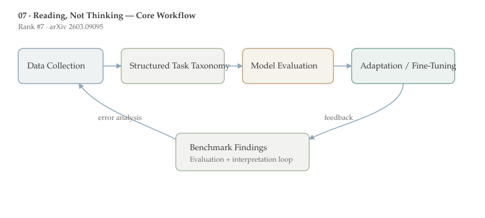

Reading, Not Thinking is ranked #7 by upvotes in the HuggingFace daily list. This document follows the standard-depth format for papers 6-10 and emphasizes method detail, benchmark interpretation, and deployment implications.
This paper shows that the “modality gap” in MLLMs is mostly a reading problem, not a reasoning problem: when the same content is rendered as pixels, models often fail on extraction, formatting, or arithmetic parsing before reasoning even begins.
The proposed fix is lightweight self-distillation: pair image inputs with the model’s own text-mode reasoning traces. On GSM8K image mode, the reported jump from 30.71% to 92.72% suggests that targeted supervision can recover much of the lost capability without a full architecture redesign.
Who should read this and why: This is essential reading for teams evaluating document AI, screenshot QA, chart reasoning, and production assistants where users often provide visual text rather than clean tokens.
Multimodal LLM pipelines usually fuse a vision encoder with a language decoder. In many products, the same user intent can be provided either as tokens (copy-paste text) or as pixels (screenshots, scans, rendered PDFs). If model behavior diverges strongly across those modes, reliability degrades and debugging becomes difficult.
Prior work frequently reported modality gaps but often mixed synthetic renderings and real documents in ways that confound interpretation. A key prerequisite here is understanding evaluation controls: font, resolution, color scheme, and image pre-processing can each alter effective task difficulty.
Another prerequisite concept is decomposition of failure type. The authors’ framing separates reading failures (character-level recognition, alignment, formatting, arithmetic transcription) from thinking failures (knowledge retrieval, chain-of-thought logic, strategy selection). This decomposition is what makes their intervention actionable.
This paper directly complements [[09-vlm-subtlebench|VLM-SubtleBench]] and [[06-stepping-vlms-court|CourtSI]]: all three emphasize that benchmark format can hide or amplify specific bottlenecks.
The central question is why MLLMs underperform when textual content is converted into images. If the core failure is reasoning, solutions should focus on larger decoders or better CoT prompting. If the core failure is perception and modality alignment, then data and training strategy must change.
The paper argues urgency is high because real-world enterprise usage is image-heavy: invoices, forms, manuals, PDF pages, and UI screenshots. A model that is strong in text-only benchmark mode can still fail badly in deployed image mode.

The study evaluates seven MLLMs on seven benchmarks under five input modes, covering both synthetic renderings and natural image documents (including arXiv PDFs and Wikipedia screenshots). This broad matrix is a design strength because it prevents overfitting conclusions to one benchmark family.
The authors report severe degradation in some synthetic settings (for example, math tasks dropping by more than 60 points), but much smaller gaps on some natural document images. They also show rendering choices can be dominant confounds, with font alone swinging performance by up to 47 points.
A grounded error analysis over 4,000+ examples attributes most of the delta to reading errors. Knowledge and reasoning error rates are comparatively stable, though some models exhibit chain-of-thought collapse under visual input.
The intervention is self-distillation: train with image inputs while supervising on the model’s own high-quality text-mode reasoning traces. Conceptually, the objective aligns latent states across modalities: $$\mathcal{L}=\lambda_1\mathcal{L}_{ans}+\lambda_2\mathcal{L}_{trace}(z_{img}, z_{txt})$$ where $\mathcal{L}_{trace}$ encourages reasoning consistency between image and text channels.
The strongest quantitative claim is image-mode GSM8K accuracy increasing from 30.71% to 92.72% after self-distillation, with transfer to unseen benchmarks and no catastrophic forgetting.
The diagnostic takeaway is equally important: image mode selectively amplifies calculation and formatting errors. This gives teams concrete debugging targets rather than broad “model is weak” conclusions.
By contrasting synthetic and natural documents, the paper also demonstrates that popular evaluation setups can overstate model weakness if rendering artifacts are not controlled.
Collectively, the results suggest that modality adaptation can be achieved through targeted post-training, not only through larger multimodal pretraining runs.
A practical recommendation from this paper is to maintain paired evaluation suites: token mode and pixel mode for the same tasks. Regressions often appear in one mode first, and paired tracking makes this visible.
Another extension is confidence calibration by modality. If the model can estimate whether it is “reading” versus “guessing,” downstream systems can trigger OCR fallback, human review, or re-rendering automatically.